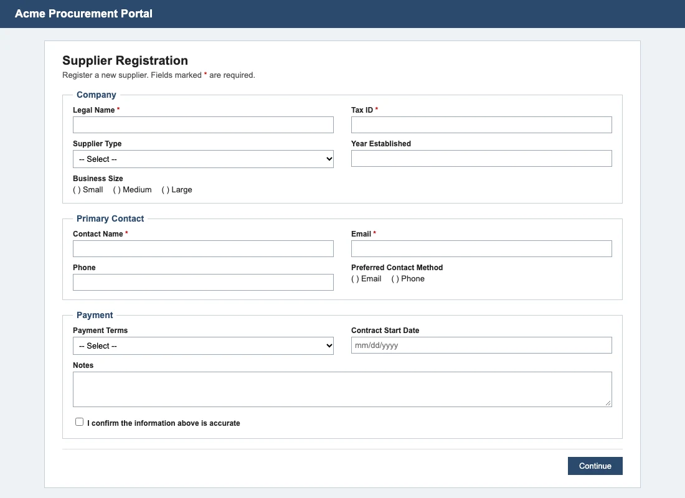
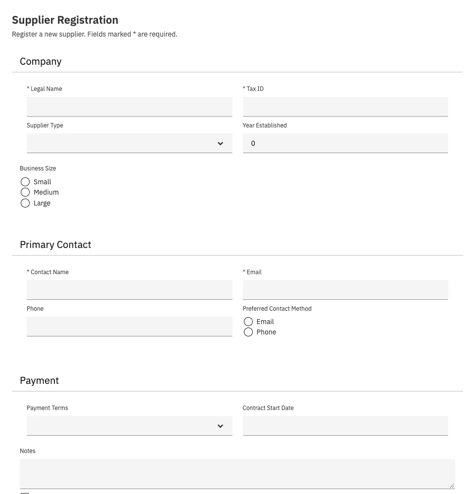
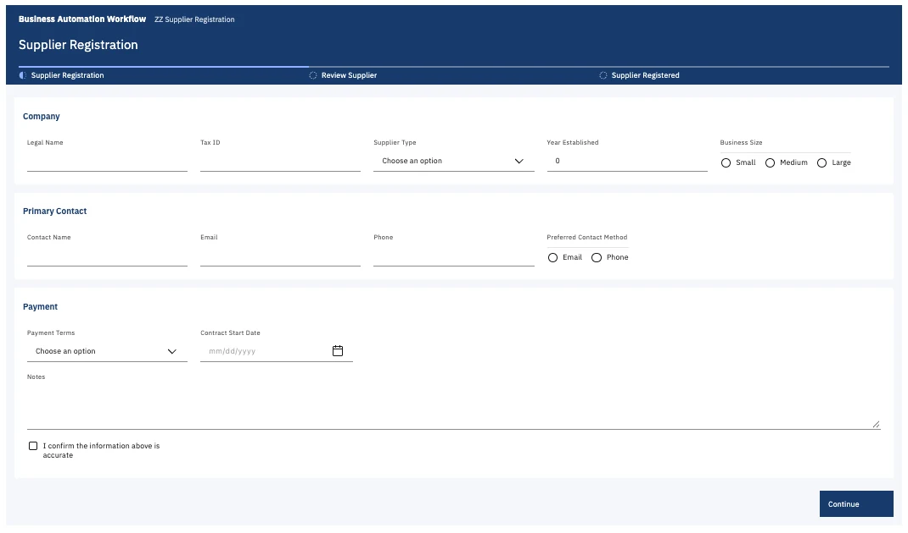
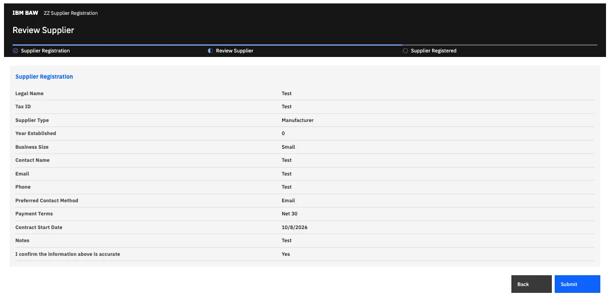

IBM Bob × BAW Dev Tools MCP
Screenshot in. Running BAW app out.
A one-hour working session. Bob turns screenshots of an old CRM tab into a BAW app, then a React + Carbon app in the client's layout and brand, with dynamic fields and connected tabs.



Set the stage before anyone arrives.
Bob designs and writes the specs. The MCP server packages, installs, inspects and tests them on BAW.1 3
- 14
- MCP tools
- 2
- Bob modes
- 6
- skills
- 0
- lines of XML by hand
- Fill
.envwithBAW_URL,BAW_USERand a password or API key. Keep it off screen. - Open the repo in Bob. The MCP panel shows baw-dev-tools with 14 tools.
- Rehearse the whole run once, so you know how long each install takes. Keep each rehearsal snapshot as a backup.
- Put the six legacy screenshots, the newer quote screen
generate-quote.png, and the client's old homepage, saved asbrand-reference.png, inscreenshots/Quote/(git ignores it, so client screens stay private). Switch to BAW App Builder mode and allow Mode in Bob's auto-approve settings, so Bob moves to BAW Coach Modernizer in Act 2 by itself. Enlarge the font. - Log in to Business Automation Studio in a second tab, to show the BPMN and run the services. There is no delete tool, so clean up the ZZ apps afterwards.
02:00 16:00
Act 1. The old screen, rebuilt in BAW.
Build a ZZ app from the screenshots in screenshots/Quote, image (1).png to image (6).png. They show one long page, scrolled, so some parts appear twice. Install it, test it and compare the result with the screenshots.Do Flip through the six screenshots: one long quote tab of an old CRM, scrolled. Point at the dropdowns with their "Other" boxes, the checkboxes and the rewards list.
Bob does Nothing yet. Let the room look at the old form.
“This screen lives in an old CRM. All we have is pictures of it, taken while scrolling.”
Do Paste the prompt in BAW App Builder mode and press Enter.
Bob does Picks the screenshot-to-app skill and plans the steps.
“One sentence. No spec, no Process Designer, no XML.”
Do Open the app spec in work/ as soon as Bob writes it: the replica as JSON.
Bob does view_image on each picture, merging the parts that appear twice, a theme file with the sampled colours, then a JSON spec: about 60 fields in 7 sections, up to three columns.
“Bob reads the picture like a developer: which box is a section, which control is a dropdown, which fields are required.”
Do Approve the design Bob shows. Point at the .twx in work/: the replica as a BAW package. Then say yes to importing it.
Bob does Bob waits for your approval, the server packages a TWX from the spec, and after your yes it installs it as a new ZZ app.
“Bob never writes BAW XML. And nothing lands on the server until a person says yes.”
Do Show the test report as it comes back.
Bob does test_service runs the service in a headless browser and screenshots every coach.
“A real browser, on the real server, pressing the real buttons.”
Do Put the screenshots and the built coach side by side.
Bob does Compares both images, fixes the spec and rebuilds if anything differs, then lists its assumptions.
“It checks its own work, and tells us what it guessed, like dropdown options it could not see, because only the selected value shows.”
Put this screen in a workflow: Sales fills it in, then Underwriting reviews it and approves it or sends it back to Sales with comments. Import it and run it once with a send-back.Do Paste the workflow prompt and approve the lanes. In Business Automation Studio, open the app, then Processes: two lanes, the review task and the Send Back path. Click the Send Back line to show its condition, then drag a task to show the diagram is editable.
Bob does Adds a process to the spec, stops for approval, builds a new snapshot, asks before importing, then test_process sends the work back once and approves it.
“A real BAW process, not a picture. Your developers open it in Studio and change it like anything they drew themselves.”
16:00 48:00
Act 2. A modern, branded React version.
Both working sessions in one go: the client's newer screen gives the layout, their old homepage the brand, IBM Carbon the components. Then fields and tabs that react to each other, and a live fix.
- LookBob switches to BAW Coach Modernizer by itself.
image_colorsreads the homepage's colours; the prompt asks for the logo, socrop_imagecuts it out. - Approve
inspect_coachesreads every coach. Bob plans tabs by section and four columns likegenerate-quote.png, improves labels, help text and validation, then waits for you. - BuildOne React screen per coach,
build_screensuntil it compiles, then a "(Modernized)" copy of the service in a new snapshot.4 - Behaviour"Other" boxes and commission amounts appear only when needed; a tab unlocks after a choice; Submit opens the first tab with a problem.
- Test and fixTypes, picks options, presses every button. Run it in Studio, then fix an issue the room picks, in a new snapshot.
Give the app you just built a React UI with IBM Carbon components. Lay it out like screenshots/Quote/generate-quote.png, the client's newer quote screen: the fields split into tabs by section, four columns, labels close to their fields, the title in the header, Submit and Cancel at the bottom right. Take the brand from screenshots/Quote/brand-reference.png, the client's old homepage: cut out its logo, and take its colours from the blue-violet bar, the cyan line, the beige section headings and the light blue panels. Improve the labels and add help text and validation. Inspect the coaches, improve the coach spec and show me before you build.Approved. Write a React screen for each coach, then modernize, install and test it.Now make the screen react to what the user enters:
- Add an Other choice to each benefit dropdown. Show its "Other" box only when Other is chosen, and make it required then.
- Show the commission $ and % boxes only when the broker commission is Custom.
- Keep the Reward Programs tab locked until a Reward Delivery Method is chosen.
- Show on each tab how many required fields are still empty, and when Submit finds a problem, open the first tab that has it.
Build, install and test it.The Broker Commission % field accepts 250. Only allow 0 to 100 and show a clear error. Rebuild, install and test it.“The layout is the client's own newer screen, the brand is theirs, the components are IBM Carbon. The old coach flow, scripts and buttons keep running underneath.”
“The look lives in one theme file. The rules run in the screen, and the data still goes into the same BAW business object.”

48:00 52:00
Guardrails, and the questions you will get.
| Installs only into ZZ apps | Demo work can never touch a real app. |
|---|---|
| Every install is a new snapshot | Reusing a name makes BAW silently keep the old content. |
| No delete tool | The agent cannot remove anything. |
| Credentials stay in the server | Bob never sees a password or a token. |
| A person approves every change | Bob asks before create, modernize and install, and edits only its own folders.2 |
Does Bob write BAW XML?
No. It writes JSON specs and React files. The server generates the TWX.
Is the BPMN a real process?
Yes. Bob generates a business process with lanes: the form is the first task, then a review task with Approve and Send Back. It opens in Studio’s process editor, where developers add steps, timers or a team per lane.
Can it read from or save to a database?
Not yet. BAW reads and writes databases through its SQL services and a JDBC data source on the server. Loading a record into the form and saving it on submit is the next step, and it needs a data source to use.
What can it not build from a screenshot yet?
Tables, file uploads, links and extra buttons. Bob lists them and offers to add them in a React screen.
Does it work with our existing apps?
Read-only, yes. export_app and inspect_coaches turn any app into a coach spec. Output installs only into ZZ copies.
Can other agents use it?
Yes. It is a standard stdio MCP server, so any MCP client can call the same 14 tools.1
What happens when something fails?
Errors come back as plain messages, such as a failed login or a compiler error with file and line. Bob fixes the input and retries.
| MCP panel shows 0 tools | Restart baw-dev-tools in Bob's MCP panel. |
|---|---|
| “Login to BAW_URL failed” | Check .env off screen. Switch to the rehearsal app meanwhile. |
| “Snapshot already exists” | Let Bob bump the snapshot. That is the guard working. |
| “stuck … fields need attention” | Validation blocked a press. Bob adds example values. |
| A slow install | Walk the room through the architecture diagram while it runs. |
52:00
Agree on what comes next.
Screenshots became a BAW app you can edit in Studio, then a React + Carbon app in the client's layout and brand, with rules and connected tabs. A person approved every change to the server.
- Does the rebuilt Info tab match the old one? Which dropdown options did Bob guess wrong?
- Is the branded screen right for production? Can they send the official logo file?
- Which fields drive other fields, and which tabs depend on each other, in the real process?
- Which tab or screen comes next?
- Which data should come from a database, and from which system?
Build a small ZZ app for an office supply request: one step with requester name, item, quantity and needed-by date, then a review screen. Install it and test it.